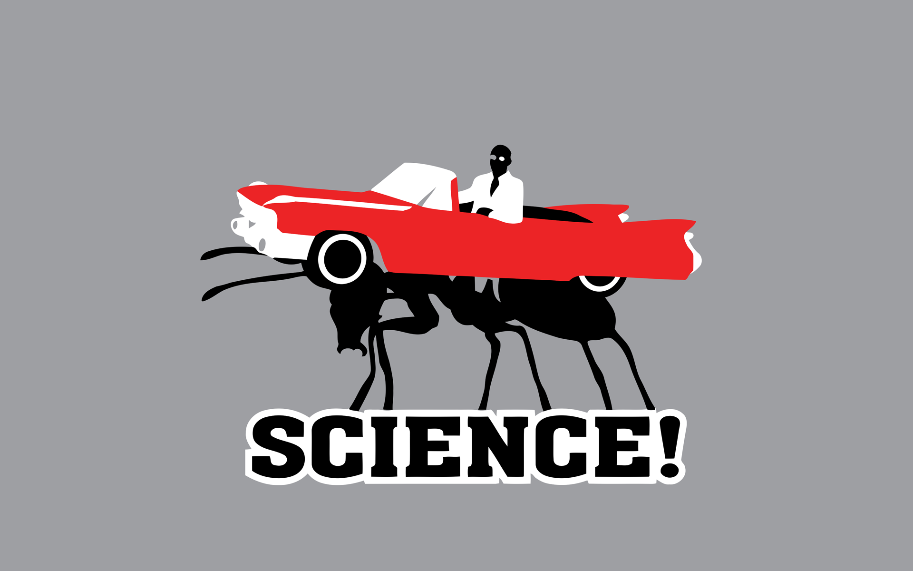

Start
Deprec but still Rollin Rollin Rollin Rollin Rollin Rollin Rollin Rollin Rollin
Rollin Rollin Rollin Rollin Rollin Rollin Rollin Rollin Rollin Rollin Rollin Rollin Rollin Rollin Rollin Rollin Rollin Rollin Rollin Rollin Rollin Rollin
bottom?
"©"
Legyen időre beadva:
[Ne legyen ERROR
validátortól.
]
Működő
5 oldal
Zip
felhasználói élmény
egységes design 2-4p
érthető felépítés 3p
jól néz ki 1-3p
jól olvasható, nem zavaros, nem lóg egybe 1-3p
ŰRLAP jól olvasható, egyértelmű 2p
favicon 1p
Igényes modern kinézet
4-8p
iframe inside(w500xh700), missing
iframe inside(w500xh700), missing
iframe inside(w500xh700), missing
iframe inside(w500xh700), missing
iframe inside(w500xh700), missing
iframe inside(w500xh700), missing
iframe inside(w500xh700), missing
iframe inside(w500xh700), missing

We do science on things, a lot of science.
Mozilla - MDN Web Docs